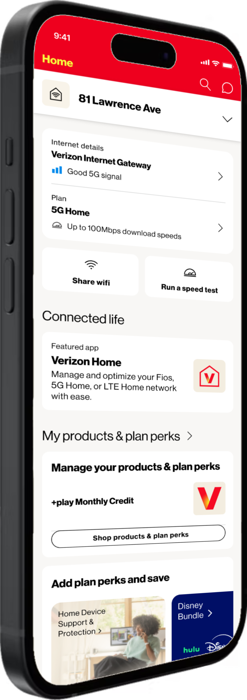
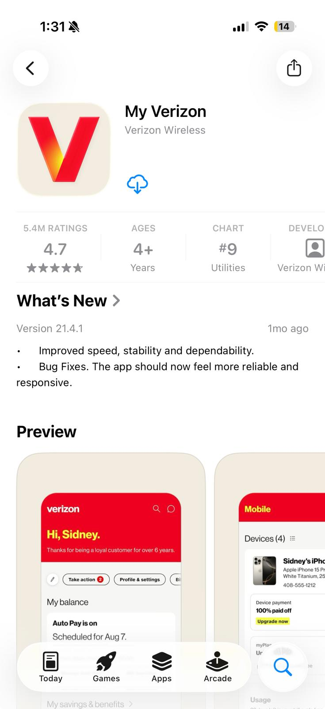
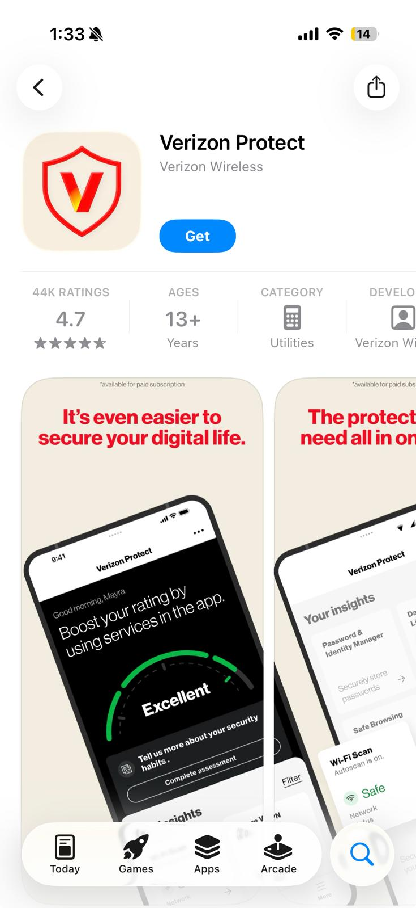
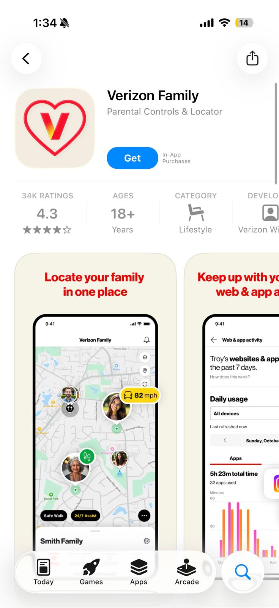
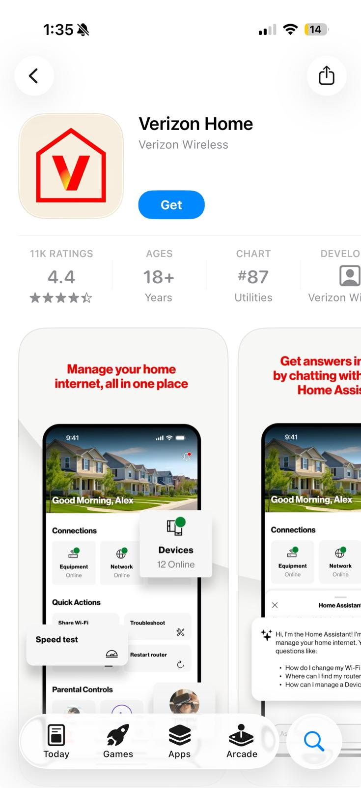
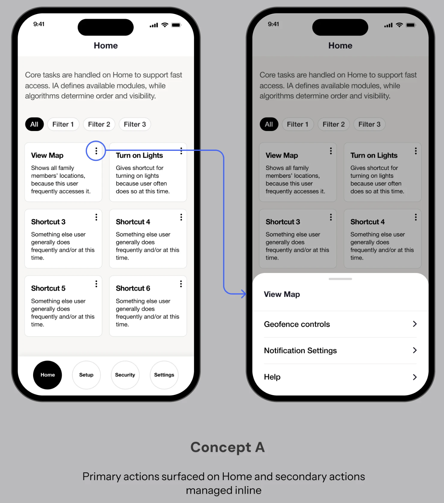
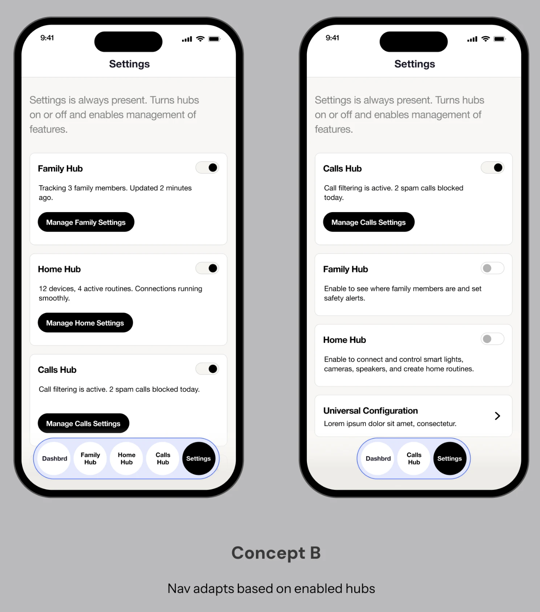
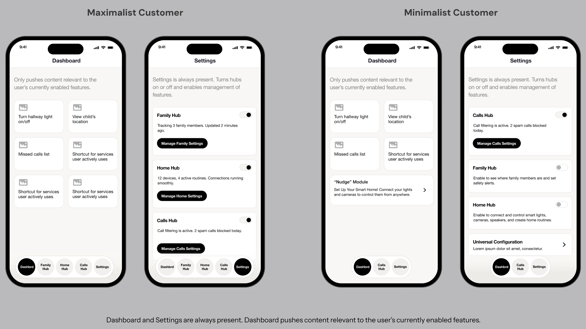
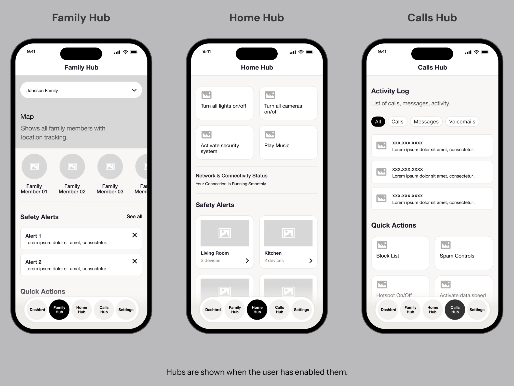
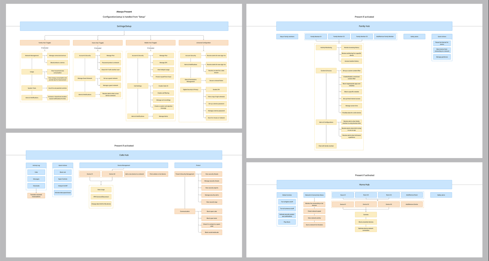

CHALLENGE 01
Fragmented experiences
Customers had to navigate between separate applications.
VERIZON · PRODUCT DESIGN · AI PERSONALIZATION
Verizon's consumer experiences were spread across four separate apps. I explored how a unified mobile ecosystem, supported by context-aware AI personalization, could simplify navigation, connect customer touchpoints, and create a more adaptive experience.

02 / THE OPPORTUNITY
Verizon offers customers a range of services across mobile, internet, devices, and account management. However, these experiences were distributed across four separate applications, creating a fragmented digital ecosystem.
Customers could find themselves navigating between different apps to complete related tasks, discover services, or manage their relationship with Verizon.
The opportunity was to rethink how these experiences could work together, creating a more cohesive destination that felt intuitive, connected, and responsive to individual needs.
CHALLENGE 01
Customers had to navigate between separate applications.
CHALLENGE 02
Related services and features were not always easy to discover across touchpoints.
CHALLENGE 03
Opportunities existed to make experiences more relevant to individual customer contexts.
Conceptual illustration, not an actual research artifact.
CURRENT EXPERIENCE · EXISTING APP SCREENS




03 / UNDERSTANDING THE OPPORTUNITY
Rather than approaching unification as a visual redesign, I focused on understanding how the existing experiences could be organized into a more cohesive structure.
Through research and early exploration, I examined how customers interact with Verizon's digital ecosystem, where experiences overlapped, and how emerging AI capabilities could support more relevant interactions.
01
Reviewed how AI personalization is being used across digital products to identify opportunities for more adaptive, context-aware interactions.
02
Mapped potential information architectures to understand how separate services and touchpoints could be consolidated into a clearer framework.
03
Used personas and user journeys to explore different customer needs, behaviors, and opportunities for personalization.
04 / DEFINING THE EXPERIENCE
The challenge wasn't simply combining four applications. It was determining how their individual capabilities could coexist within an experience that felt intuitive rather than overwhelming.
I explored potential information architectures that brought related services and customer needs closer together, considering how navigation, content hierarchy, and key touchpoints could work across a unified application.
05 / HUMAN–AI RESEARCH
Before exploring interface concepts, I examined emerging human–AI interaction patterns across industries to understand how adaptive experiences could balance intelligence with user agency.
Rather than treating AI as a standalone feature, I focused on how it could be integrated into the underlying experience: building trust, supporting discovery, and making interactions more relevant without overwhelming users.

PRINCIPLE 01
AI should understand the user's situation and make relevant information easier to access.
PRINCIPLE 02
Recommendations and interactions should reflect meaningful customer needs rather than add unnecessary complexity.
PRINCIPLE 03
Personalized experiences should remain transparent and intuitive, allowing customers to understand and navigate their options.
These are conceptual design principles, not claims about a completed AI product.
06 / CONSOLIDATING THROUGH HIERARCHY
With the behavioral considerations established, I mapped detailed information architecture models to explore how four separate applications could be consolidated into a unified framework.
This approach improved logical grouping and created a more consistent structure. However, as the hierarchy became deeper, less frequently used features became harder to discover.
The experience was becoming cleaner, but increasingly rigid.

THE INSIGHT
07 / EXPLORING TWO CONCEPTS
The initial architecture revealed an important limitation: a structure optimized for highly engaged customers could create unnecessary complexity for those who only needed a handful of features.
I shifted the exploration toward two alternative approaches, examining where adaptive intelligence should live within the experience.


08 / EVALUATING TRADE-OFFS
Both concepts explored ways to reduce complexity, but they approached adaptivity differently.
Concept A relied on centralized prediction to surface relevant tasks. Concept B distributed adaptivity across navigation and feature hubs, allowing customers to retain more control over how their experience was organized.
Concept B offered a more scalable foundation, supporting both minimalist and highly engaged behaviors without relying entirely on system assumptions.

| Criteria | Concept A | Concept B |
|---|---|---|
| Where adaptivity lives | Home feed | Navigation + Home |
| Navigation model | Stable, fixed tabs | Dynamic, hub-based |
| User control | Implicit, behavior-driven | Explicit, enable/disable hubs |
| Cognitive load | Managed through content surfacing | Managed through feature removal |
| Scalability | Moderate | Higher |
09 / MODULAR NAVIGATION
Concept B introduced adaptive navigation hubs: modular groupings of related features that could appear based on relevance and user preference.
This approach allowed the experience to expand as customer needs evolved, while maintaining a consistent underlying structure.

10 / RETURNING TO STRUCTURE
With the conceptual framework established, I revisited the information architecture, reorganizing features based on their purpose, flow, and relationship to each adaptive hub.
This phase focused on structural validation rather than polished UI execution.

11 / REFLECTION
This project challenged me to think about product design at an ecosystem level. Rather than optimizing a single interaction, I had to consider how multiple experiences, customer needs, and emerging technologies could come together within one coherent product direction.
It reinforced the importance of establishing a strong information architecture before moving into detailed interface design, and of treating AI as an opportunity to make experiences more relevant rather than simply more automated.
Ultimately, the work strengthened my ability to navigate ambiguity, translate broad opportunities into structured design directions, and think critically about the future of human–AI interactions.